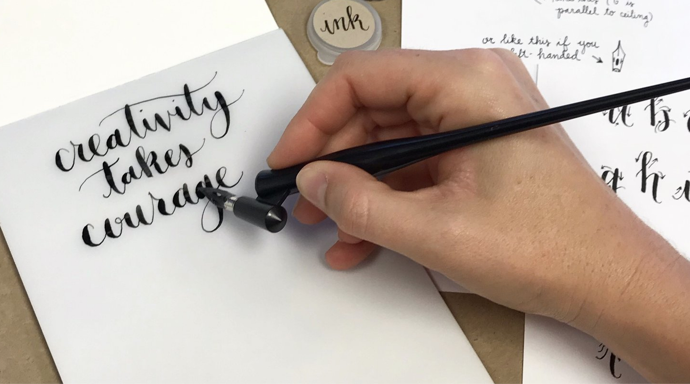

Skills
Physical skills are skills at some organized motion of any set of body parts.
For example playing a basket ball is a physical skill as it constitutes an organized motion of set of body parts like hands, legs, shoulders, etc.
Calligraphy is also another physical skill. It involves very organized and fine movements of fingers and hand. Other examples of physical skills are playing guitar, skating, cycling, etc.
Not all skills are physical i.e. not all skills require an organized motion of some muscles. There are skills that don't involve any such organized motion of muscles. For instance, reading skill does not require you to have any muscle movement. Though eye movement, head movement, or may be speaking is involved in reading but they are not really the part of reading skill. After all you don't require to have any organized movement of eye or head in order to be a better reader nor do you need to speak in order to read effectively, it might be effective during initial stage Reading involves processing the information taken by eye in the brain. Other examples are writing, analytical skill, etc.
Practise
Now coming to the physical skill, learning any skill isn't just only thing that's needed to be a good performer. In order to perform more like an expert requires practise.
Practise is the repetition of the action that involves in the skill with the goal to performing more better.
Now what actually happens in our brain when we practise any physical skill? To understand this lets learn a bit about brain functioning.
Lets learn the basics
Neurons are the carrier of information
A neuron is a cell that carries information from brain to the spinal cord or vice versa. A neuron consists of a cell body and a long tail called axon.
Axon carries information in the form of electrical signals.
The axons are covered with an insulation made up of substance called lipid. This insulation layer is called myelin sheath.The myelin prevents electrical signal in the axon from being disrupted and it faciliates the propagation of signal through axon.
Lets learn the basics
Gray and White matters
There are regions in the brain, called gray matter, that consists primarily of the cell bodies of neurons. The axons extending from cell bodies in gray matter are clustered in a region in brain called white matter. From the white matter these axons extends to the spinal cord.
The gray matter processes information that our brain collects from surrounding by our senses. And then sends the instructions like move hand, fingers, head, etc.
This instruction is carried by the neurons along their axons, which is then received by muscles and then it moves.
Link between practise and inner working of brain
In the studies on rats it has been found that repetition of physical motion increases the layers of myelin sheath that insulates the axon.
Thus creating a more efficient route for the information to travel from the brain to the muscles. So it appears that it might be that one of the connections between practise and improvement in the physical skill is due to the development of more efficient neural pathways.
Reference
In the studies on rats it has been found that repetition of physical motion increases the layers of myelin sheath that insulates the axon.